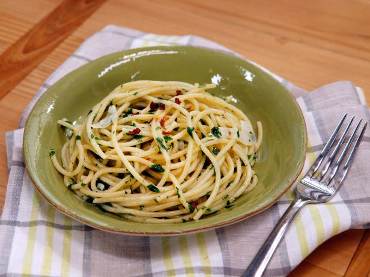

Aglio e Olio

Garlic and Oil
Aglio e Olio is a traditional italian dish. Literally meaning "garlic and oil,"
it is created by simmering finely-chopped
garlic in olive oil until golden brown and soft, to which noodles are added.
The dish is then topped with fresh parsley and red pepper flakes,
giving a refreshing, rustic flavor with a bit of a kick!
Ingredients
- 2 tbsp salt
- 5 garlic cloves
- 1/2 cup olive oil
- 1/2 cup fresh parsley
- 1 pound spaghetti noodles
- 2 tbsp red pepper flakes
Directions
- Fill a pot with water, add salt, and set it to boil.
- Simmer olive oil at medium heat in a pan.
- Peel and finely chop garlic.
- Add noodles to boiling water.
- Add garlic to olive oil.
- Stir garlic regularly until it becomes golden-brown and soft.
- Add cooked noodles to pan.
- Pour 1/2 cup of pasta water into pan.
- Top with parsley and red pepper flakes.
- Stir until thorougly combined.
- Enjoy!